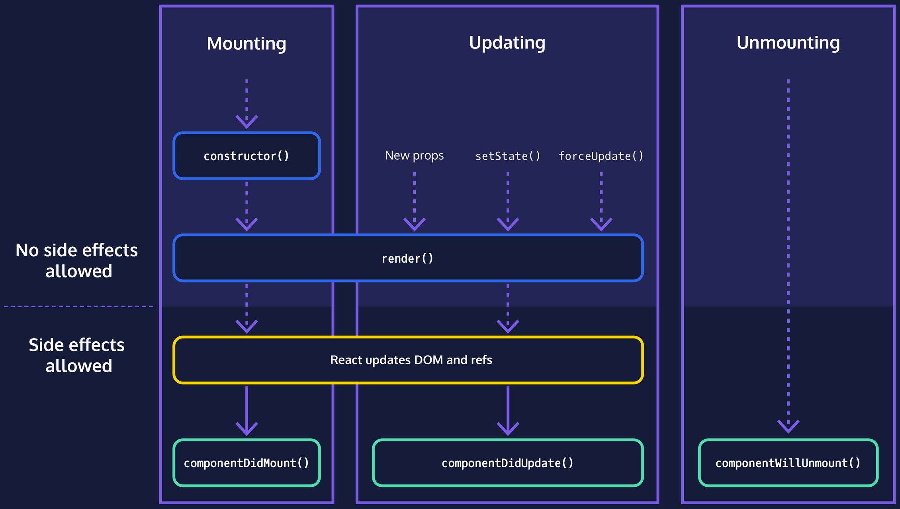
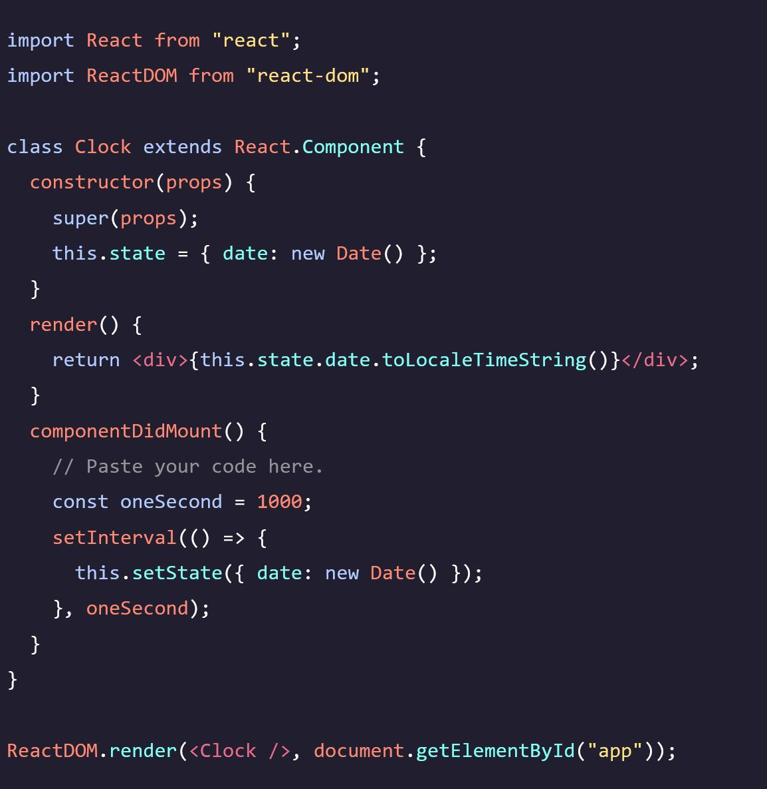
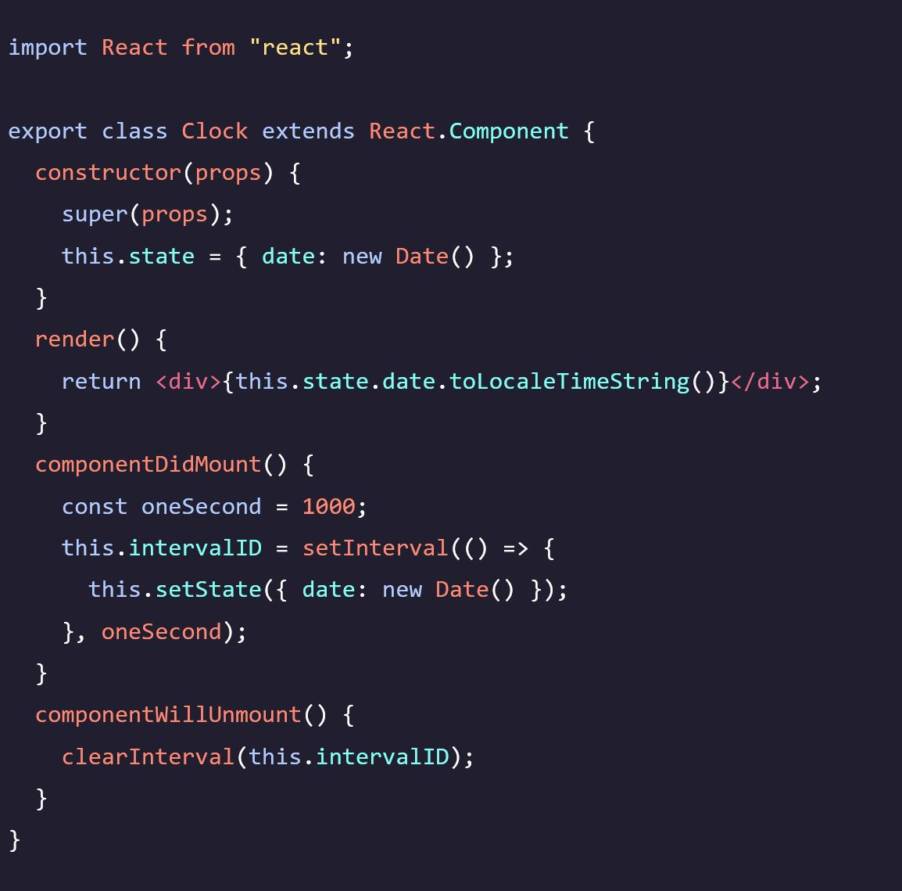

Codecademy - Learn React: Lifecycle Methods
Notes taken while going through the Codecademy Learn React: Lifecycle Methods course
Component Lifecycle Methods
The Component Lifecycle
- React components go through a lifecycle consisting of three main parts: Mounting, Updating, and Unmounting.
- Mounting occurs when a component is initialized and added to the DOM for the first time.
- Updating happens when a component updates due to changes in its state or props.
- Unmounting takes place when a component is removed from the DOM.
- Every React component goes through at least the Mounting step to be visible.
- Components are typically updated when their state changes or when new props are passed to them.
- Purely static components, like a logo, may not need to update.
- Unmounting occurs when a component is removed from the DOM, such as when hiding a component or transitioning between screens.
- Each component instance has its own lifecycle, so multiple instances of a component on a page will have separate lifecycles.
- Once a component instance is unmounted, it will not be remounted, updated, or unmounted again. 
Introduction to Lifecycle Methods
- Lifecycle methods in React are special methods that are called at different stages of a component's lifecycle.
- Two common lifecycle methods are constructor() and render().
- constructor() is called during the mounting phase and is used for initializing the component's state and binding event handlers.
- render() is called during both the mounting and updating phases. It is responsible for rendering the component's JSX and returning it for display.
- Lifecycle methods don't necessarily correspond directly to specific parts of the lifecycle. Some methods may be called multiple times or only once, depending on the phase.
- These methods allow you, as the programmer, to manage and interact with the component's lifecycle and perform actions at specific stages.
componentDidMount
- componentDidMount() is a lifecycle method in React that is called after the component has been rendered and added to the DOM.
- It is part of the mounting phase of the component's lifecycle.
- The order of execution during the mounting phase is: constructor, render, componentDidMount.
- componentDidMount() is commonly used to perform initialization tasks and side effects that require access to the DOM or external data.
- It is a good place to start timers, fetch data from an API, or set up event listeners.
- Another method called getDerivedStateFromProps() is rarely used. 
componentWillUnmount
- If a component uses a side-effect, such as a setInterval() function, it's important to clean up that side-effect to avoid performance issues and potential bugs.
- When a component is unmounted (removed from the page), any ongoing side-effects should be stopped to prevent unnecessary JavaScript code from running.
- React provides the componentWillUnmount() lifecycle method, which is called in the unmounting phase just before the component is destroyed.
- In componentWillUnmount(), you can perform cleanup tasks for your component's side-effects.
- To stop a setInterval() function, you can use the clearInterval() function by passing in the ID returned by setInterval().
- It's important to clean up side-effects to avoid memory leaks, performance degradation, and potential bugs in your application. 
componentDidUpdate
- The component lifecycle consists of three parts: mounting, updating, and unmounting.
- Mounting occurs when the component is initialized and added to the DOM for the first time.
- Updating happens when the component's state or props change.
- Unmounting occurs when the component is removed from the DOM.
- Updates are triggered by changes in props or state.
- The render() method is called during an update to re-render the component.
- The componentDidUpdate() method is another important method that is called after the component updates.
- componentDidUpdate() is a good place to perform update-phase tasks or work.
- It provides an opportunity to respond to changes in props or state and update the component accordingly.
- By implementing componentDidUpdate(), you can handle specific logic or side-effects that need to occur after an update.
Review: Component Lifecycle Methods
- Mounting, when the component is being initialized and put into the DOM for the first time. We saw that the constructor, render(), and componentDidMount() are called during this phase.
- Updating, when the component updates as a result of changed state or changed props. We saw that render() and componentDidUpdate() are called during this phase.
- Unmounting, when the component is being removed from the DOM. We saw that componentWillUnmount() was called here, which was a good time to clean things up.
- We also learned about setting up side-effects and tearing them down. We now know how to make more robust, complex components!